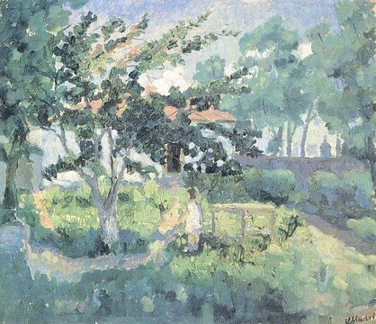

Kazimir Malevich,1879 - 1935,Suprematism,Russian,"Kazimir Severinovich Malevich (February 23 [O.S. 11] 1879 – May 15, 1935) was a Russian avant-garde artist and art theorist, whose pioneering work and writing had a profound influence on the development of non-objective, or abstract art, in the 20th century. Born in Kiev to an ethnic Polish family, his concept of Suprematism sought to develop a form of expression that moved as far as possible from the world of natural forms (objectivity) and subject matter in order to access ""the supremacy of pure feeling"" and spirituality.Early on, Malevich worked in a variety of styles, quickly assimilating the movements of Impressionism, Symbolism and Fauvism, and after visiting Paris in 1912, Cubism. Gradually simplifying his style, he developed an approach with key works consisting of pure geometric forms and their relationships to one another, set against minimal grounds. His Black Square (1915), a black square on white, represented the most radically abstract painting known to have been created so far and drew ""an uncrossable line (…) between old art and new art""; Suprematist Composition: White on White (1918), a barely differentiated off-white square superimposed on an off-white ground, would take his ideal of pure abstraction to its logical conclusion. In addition to his paintings, Malevich laid down his theories in writing, such as ""From Cubism and Futurism to Suprematism"" (1915) and The Non-Objective World: The Manifesto of Suprematism (1926).Malevich's trajectory in many ways mirrored the tumult of the decades surrounding the October Revolution (O.S.) in 1917. In its immediate aftermath, vanguard movements such as Suprematism and Vladimir Tatlin's Constructivism were encouraged by Trotskyite factions in the government. Malevich held several prominent teaching positions and received a solo show at the Sixteenth State Exhibition in Moscow in 1919. His recognition spread to the West with solo exhibitions in Warsaw and Berlin in 1927. Upon his return, modern art was falling out of favor with the new government of Joseph Stalin. Malevich soon lost his teaching position, artworks and manuscripts were confiscated, and he was banned from making art. In 1930, he was imprisoned for two months due to suspicions raised by his trip to Poland and Germany. Forced to abandon abstraction, he painted in a representational style in the years before his death from cancer in 1935, at the age of 56.",http://en.wikipedia.org/wiki/Kazimir_Malevich,126
